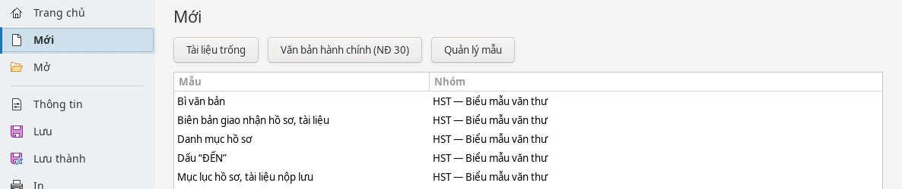
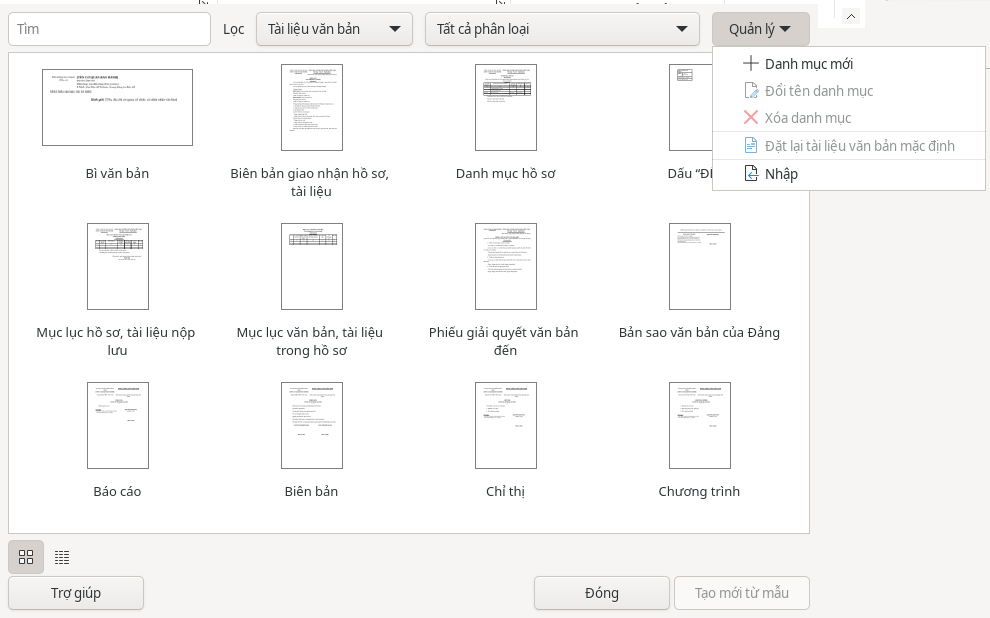
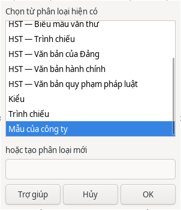
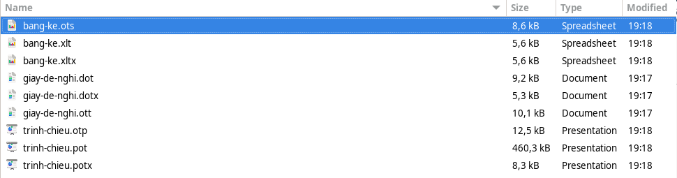
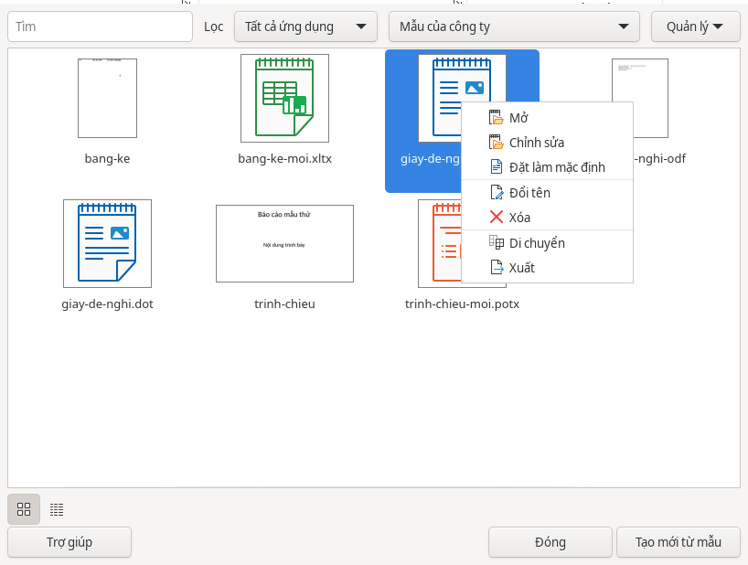
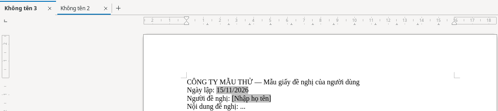
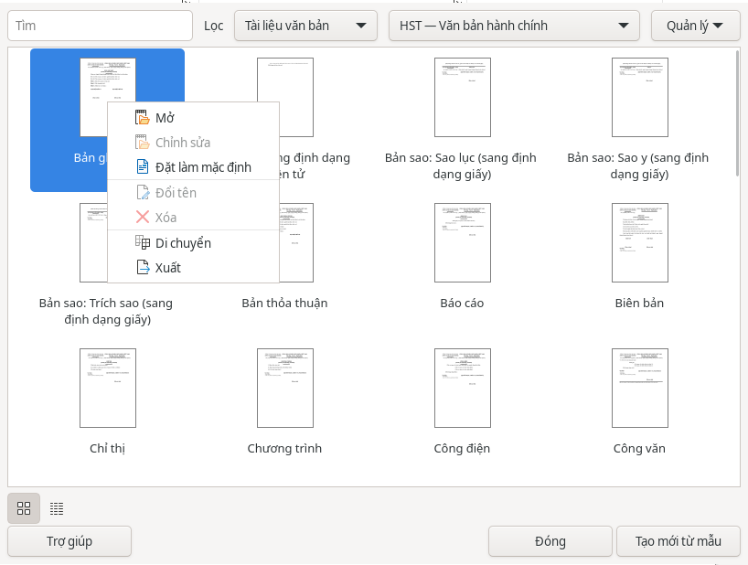

Khác
Nhập mẫu văn bản của bạn
HST Office có sẵn 84 mẫu: 73 mẫu trong bốn nhóm văn bản (văn bản hành chính 37, văn bản của Đảng 22, biểu mẫu văn thư 12, văn bản quy phạm pháp luật 2), 6 mẫu bảng tính và 5 mẫu trình chiếu. Bạn có thể nhập thêm mẫu của cơ quan, đơn vị mình từ tệp có sẵn trên máy và dùng chúng cạnh bộ mẫu HST.
HST Office không tải mẫu qua mạng. Mẫu bạn nhập được lưu trong hồ sơ người dùng trên máy này.
Định dạng nhập được
| Loại | Tệp mẫu |
|---|---|
| Văn bản | .ott, .dotx, .dot |
| Bảng tính | .ots, .xltx, .xlt |
| Trình chiếu | .otp, .potx, .pot |
Mở hộp thoại Mẫu
Chọn rồi bấm . Trang cũng liệt kê các mẫu của ứng dụng đang mở để bạn chọn nhanh.

Tạo danh mục riêng (nên làm)
- Trong hộp thoại Mẫu, bấm .
- Gõ tên danh mục, ví dụ Mẫu của công ty, rồi bấm .
Nhập mẫu
- Bấm .
- Trong hộp , chọn danh mục sẽ chứa mẫu rồi bấm . Bạn cũng có thể gõ tên vào ô .
- Chọn một hoặc nhiều tệp mẫu rồi bấm . Ô loại tệp chỉ hiện các tệp mẫu.
- Mẫu xuất hiện trong danh mục đã chọn. Tên hiển thị là tên tệp: mẫu
.ott,.ots,.otpkhông kèm phần đuôi, mẫu định dạng khác hiện cả phần đuôi (ví dụgiay-de-nghi.dotx).



Bạn có thể nhập vào một nhóm HST có sẵn hoặc vào danh mục của bạn. Mẫu gốc của HST Office không bị thay đổi.
Tạo văn bản từ mẫu
Trong hộp thoại Mẫu, nháy đúp vào mẫu. HST Office mở một tài liệu mới chưa đặt tên (Không tên…) có nội dung của mẫu; tệp mẫu không bị sửa.


.dotx.Đặt làm mẫu mặc định
- Bấm chuột phải vào mẫu, chọn . Mẫu có thêm dấu kiểm nhỏ.
- Từ đó, tài liệu trống mới của ứng dụng đó dùng mẫu này, kể cả sau khi khởi động lại HST Office.
- Muốn quay lại như cũ: .
.dotx, .xltx, .potx, .dot, .xlt, .pot, lệnh không có tác dụng. Hãy mở mẫu đó, dùng để lưu thành mẫu .ott (bảng tính: .ots, trình chiếu: .otp), nhập tệp mới rồi đặt làm mặc định.Xóa mẫu và danh mục
- Xóa một mẫu bạn đã nhập: bấm chuột phải vào mẫu → → .
- Xóa cả danh mục: chọn danh mục ở ô lọc phân loại, bấm → . Các mẫu trong danh mục bị xóa theo.
- Mẫu có sẵn của HST Office được khóa: , , bị làm mờ. Bạn vẫn mở và đặt chúng làm mặc định được.

Lưu ý khi nhập
- Hai tệp cùng tên, khác phần đuôi (ví dụ
giay-de-nghi.ottvàgiay-de-nghi.dotx) nhập vào cùng một danh mục: tệp thứ hai bị báo lỗi. Đổi tên tệp (ví dụgiay-de-nghi-moi.dotx) rồi nhập lại. - Đặt tên tệp dễ hiểu trước khi nhập, vì tên tệp là tên hiển thị của mẫu.
- Chỉ nhập mẫu từ nguồn bạn tin cậy.